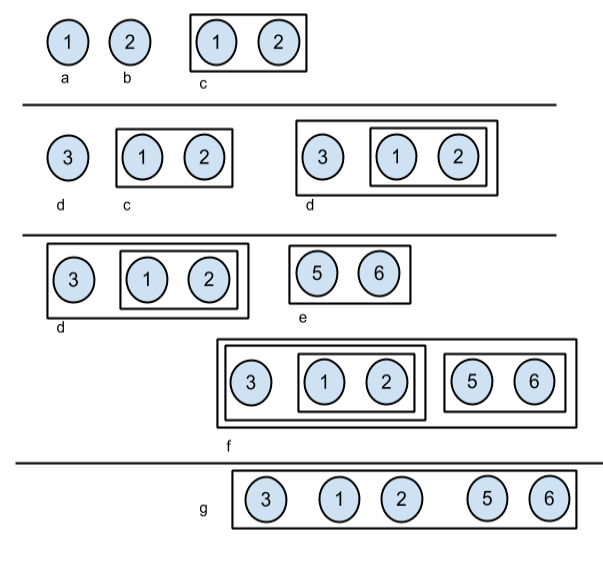

Trabajo Práctico State y Strategy
Objetivos
Comprender los patrones de diseño Composite y Strategy. Discutir alternativas de diseño e implementación.
Encriptación
Debe implementar la clase EncriptadorNaive, que se encarga de transformar cadenas de texto para que puedan ser enviadas por una red de computadoras en forma segura. La misma posee una única forma de encriptar que consiste en cambiar el orden de las palabras. Luego, debe agregar nuevas formas de encriptar y desencriptar, por ejemplo:
- Modificando cada aparición de una vocal en el texto por la vocal siguiente en el orden tradicional, esto es: si aparece una a, la cambia por una e, si aparece una e la cambia por una i y así siguiendo. Para las consonantes, números y cualquier otro carácter no realiza ningún cambio.
- Escribiendo cada letra por un numero que la representa. Las letras del abecedario están numeradas la ‘a’ con el 1, la ‘b’ con el 2 y así siguiendo. El espacio esta representado por el numero 0 y los números están separados por comas. Por ejemplo la palabra “Diego” se representa por la cadena “4,9,5,7,15”. No se distinguen mayúsculas, ni minúsculas. Asuma que no hay acentos ni otros caracteres diferentes a las letras y los espacios.
Por su parte, el método desencriptar realiza la inversa de cada uno. Recibe un String como parámetro y retorna otro String donde realizo la desencriptacion.
- public String encriptar(String texto)
- public String desencriptar(String texto)
Sobre este enunciado:
- Realice un diagrama de clases UML de la solución propuesta
- Realice los test de unidad necesarios para la clase EncriptadorNaive y sus método encriptar y desencriptar, para que pueda ser utilizada para encriptar y desencriptar cadenas de texto utilizando las diferentes formas de encriptación.
- Implemente en Java.
Cultivos
Diseñe una solución para el siguiente problema. Se debe modelar un sistema que controla el uso que se le da a porciones productivas de tierra. Las porciones pueden ser puras de un cultivo o mixtas, estas ultimas se dividen en cuatro regiones iguales. En cada región se pueden plantar solamente soja, trigo o subdividir la porción en cuatro siguiendo las mismas reglas anteriores. La figura muestra un ejemplo de esto. A partir del cultivo, el sistema debe determinar las ganancias anuales de cada tipo de cultivo para una región. La región cultivada con soja da una ganancia anual de $500, la de trigo $300. En caso que la región este subdividida, la ganancia será́ proporcional a la cantidad de sub parcelas que posean ese cultivo. El sistema debe responder a la ganancia anual que dará́ la parcela tanto para soja como para trigo.
- Implemente en Java
- Describa las alternativas que puede utilizar para calcular la ganancia anual. Relacione las alternativas.
- Explique la discusión sobre quiénes deben implementar las operaciones de agregado y borrado de hijos.
- Sobre su implementación, indique los roles que desempeñan cada una de las clases diseñadas en relación al patrón Composite.
ShapeShifter
ShapeShifter es un nuevo tipo objetos que posee una estructura del tipo arbórea. Estos objetos deben poder componerse, detectar la mayor profundidad y “achatarse”. En esta primera etapa es necesario que simplemente trabajen con Integer. Como la idea es un tanto difusa, se provee una interfaz java y una serie de descripciones con ejemplos de cada una de las funcionalidades necesarias.
public interface IShapeShifte{
public IShapeShifter compose(IShapeShifter);
public int deepest();
public IShapeShifter flat();
public List<Integer> values();
}
Se espera que la clase que implemente la interfaz cumpla con:
- public IShapeShifter compose(IShapeShifter);
- recibe un IShapeShifter y retorna un nuevo IShapeShifter que es el resultado de componer al receptor con el que es enviado como parámetro.
- La composición se realiza al mismo nivel de profundidad.
- En la Figura 1 se muestran esquemas de IShapeShifter, cada letra sibolizaria un nombre de variable. Entonces las siguientes expresiones deberían ser verdaderas:
- a.compose(b) es igual a c
- d.compose(c) es igual a d
- d.compose(e) es igual a f
- public int deepest(IShapeShifter)
- Retorna un numero que representa la profundidad máxima alcanzada en composiciones que contiene.
- Continuando con las figuras de ejemplo, las siguienes expresiones deben ser validas:
- a.deepest() es igual a 0.
- c.deepest() es igual a 1.
- f.deepest() es igual a 3.
- public IShapeShifter flat() Achata un IShapeShifter.
- Si el IShapeShifter posee una prfundidad maxima >= 1, entonces retorna un IShapeShifter de profundidad maxima 1 con todos los IShapeShifter de profundidad 0 contenidos. En cualquier otro caso, retorna el mismo IShapeShifter.
- Siguiendo los siguientes ejemplos:
- a.flat() es igual a a.
- f.flat() es igual a g.
- Importante: No es necesario establecer un orden particular de los IShapeShifter en los resultantes.
- public List<Integer> values()
- Retorna una lista de enteros con los valores incluidos en el IShapeShifter.
- Siguiendo el ejemplo:
- a.values retorna una lista con el entero 1.
- d.values retorna una lista con los enteros 3,1 y 2.
- Importante: No es necesario establecer un orden particular de los enteros en la lista.
Figura 1. Ejemplos
Ejercicios:
1. Realizar un diagrama de clases UML donde muestre un diseño orientado a objetos que resuelva el problema aplicando el patrón Composite.
2. Indicar en el diseño cuales son los roles del patrón.
3. Implementar en java todo lo necesario para resolver la funcionalidad de la interface con clases que la implementen
4. Escribir un método en el cual muestre como se instancia el ejemplo a y c.
Obra publicada con Licencia Creative Commons Reconocimiento Compartir igual 4.0